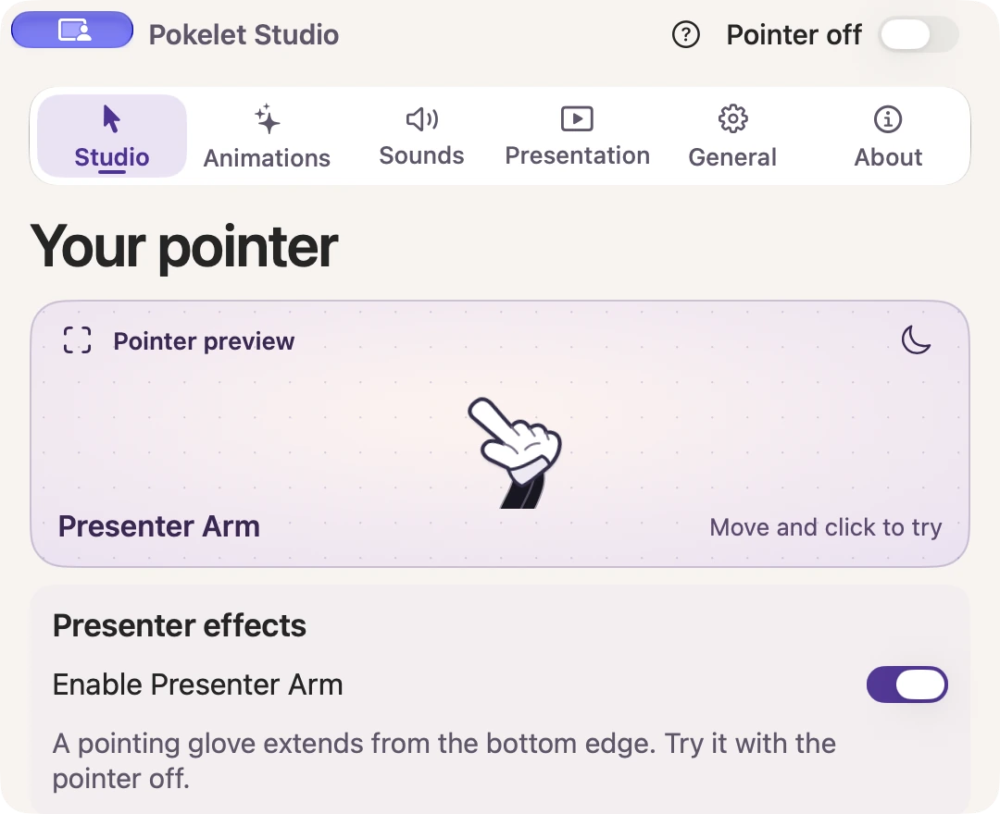

A Mac mouse pointer for presentations
Use Pokelet’s Presenter Arm to point to part of a slide or guide viewers through an app. A pointing glove extends from the bottom of your display while the standard Mac pointer stays visible.
Check what viewers will seeSet up Presenter Arm
- Open Pokelet Studio and turn on Enable Presenter Arm in Studio. Move the pointer around the preview to see how the glove follows it.
- Adjust Size in Studio and check that the glove is visible without covering the labels you want to point out. Use Enable Pointer in the Pokelet menu bar menu to show it over your slides or another app.
- Rehearse with the actual slide deck or app. If you prefer a smaller marker, switch off Presenter Arm and try Companion or Click-only mode.

Share a whole display or a single window
Pokelet draws the pointer effect in a separate overlay above your apps. The capture source you choose in your meeting or recording app determines which windows viewers can see.
- Whole display
- Select the display showing your slides or demo. Whole-display capture can include Pokelet’s overlay, depending on the capture tool and its settings. It can also show notifications and other windows on that display, so close anything private first.
- Single window or browser tab
- Expect the Pokelet overlay to be omitted because it sits outside the window or tab being captured. Your meeting app may still show the standard Mac pointer. If you need to keep sharing a single window, use a pointer or annotation tool built into your slides or meeting app and confirm that viewers can see it.
Before the session, ask someone to confirm they can see the glove or watch back a short test recording. Seeing it on your own Mac only confirms that Pokelet is running. If the effect is missing, check the capture source and selected display, then repeat the test.